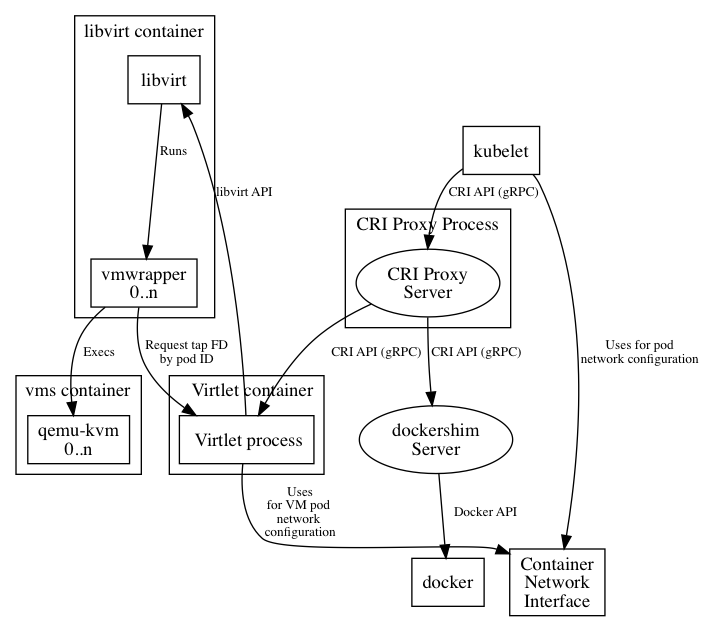

Overview
The following figure provides a general view of Virtlet architecture:

Virtlet consists of the following components:
- Virtlet manager which implements CRI interface for virtualization and image handling
- libvirt instance
- vmwrapper which is responsible for setting up the environment for emulator
- the emulator, currently qemu with KVM support (with a possibility to disable KVM)
In addition to the above, our example setup uses CRI proxy which provides the possibility to mix dockershim and VM based workloads on the same k8s node.
Virtlet manager
The main binary is responsible for providing API fullfiling CRI specification. It serves the requests from kubelet by doing the following:
- setting up libvirt VM environment (virtual drives, network interfaces, trimming resources like RAM, CPU)
- performing CNI setup
- telling libvirt to call vmwrapper instead of using emulator directly
- querying libvirt for VM statuses
- instructing libvirt to stop VMs
- performing CNI teardown
- and finally calling libvirt to tear down VM environment.
vmwrapper
vmrapper is run by libvirt and wraps the emulator (QEMU/KVM). It
requests tap file descriptor from Virtlet, adds command line
arguments needed by the emulator to use the tap device and then
execs the emulator.
CRI Proxy
CRI Proxy is an external project provides a way to run multiple CRI implementations on the same node, e.g. Virtlet and dockershim. This is handy for running infrastructure pods such as kube-proxy. It's possible to reuse dockershim component from kubelet to make it possible to have Docker as one of CRI implementations on the multi-runtime nodes.